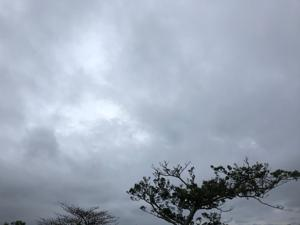
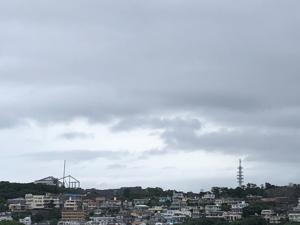
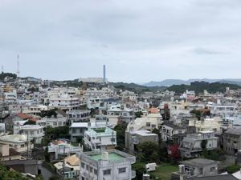
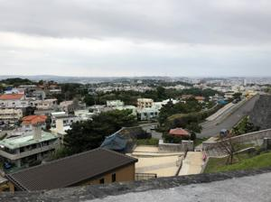

うるがいの話 ある日
最新: 令和４年度の年度末【うるがいの話 ある日】とは 一日だけのプログです
『うるがいの話』の最新一日だけのプログで、通信料が少なく経済的だ。カニの画像をクリックすると全ての日付が載る『うるがいの話』サイトを表示します
|
|
【うるがいの話】 うるがい(ｳﾙｶﾞｲ urugai)とは、『もずくがに』の名前でとても大きくなります。 |
|---|---|
|
|
【カミマヤーの話】 猫のことを方言でマヤーといいます。カミマヤー（kamimayaa）とは、神の猫のことです。 |
|
【たながぁの音楽】 たながぁ（ﾀﾅｶﾞｰ tanagaa）とは手長えびのことで、何種類かあり大きいのは車 エビぐらいになります。 |

|
【ぶながぁの話】 ぶながぁ(ﾌﾞﾅｶﾞｰ bunagaa)とは、赤い髪の毛、赤い身体、そして身長は１ｍ２０ｃｍ ぐらい、川の蟹を食べているの目撃された。場所は沖縄県国頭郡大宜味村のと ある村僕の隣近所に住んでいる爺さんから、聞いた話です。 |
|
|
【ギーマの話】 ギーマ(giima)とは、山原の里山に咲くスズランに似た、 花を付けます。実は食べられます、 気が付くと口の周りが紫になっています。 |
2023年03月31日 (金）令和４年度の年度末
14:53
   
毎日が日曜日で好きなことができると思ったが、３年もたてばゴルフでも、海
外旅行でも飽きる。暇を持て余す。
テレビで県庁の退職式典の様子が、映し出されていた。私の退職から３年経っ
た。会社の部活のＯＢが、退職した人生終わりだよ、とつぶやいていたのを思
いだす。退職したら、唯一やりたかった海外旅行はコロナ禍で行けなかったが
今現在、暇はしていない、当分はなさそうである。昨日、家に来たコドモは５
月からの海外旅行のため４種類のワクチン接種を２時半に行うと言っていた。
夜は、テレビを私が占有している。長い時間は疲れるので、近頃は早見（１．
３倍の速さ）で映画等を見ている。ジュリーこと沢田研二が主人公の『キネマ
の神様』を観る。あの、樹木希林がジュリーのポスターを眺めながら、『ジュ
リー』と叫んでいたお方。往年の面影もなく、ただのおっさんになっていた。
歌を披露するシーンがあり、ジュリーの持ち歌を歌うのかと期待したが、『東
村山音頭』だった。エンドロールに志村けんの名前が、そうか、志村けんの代
わりか。それにしても、この３年間はコロナで、その間にウクライナ戦争が始
まり暗澹とした期間だった。来年の今頃には、マスクは外しているだろうか、
戦争は終結しているだろうか、と思っている暇人がいる。
１４時４４分 ビットコインの総資産 ￥１０、８６７（↓１４５）